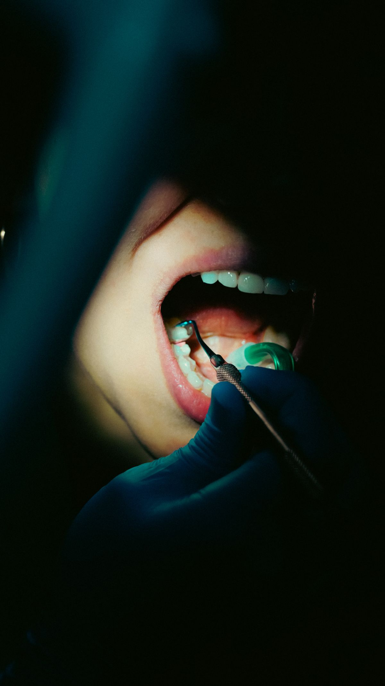
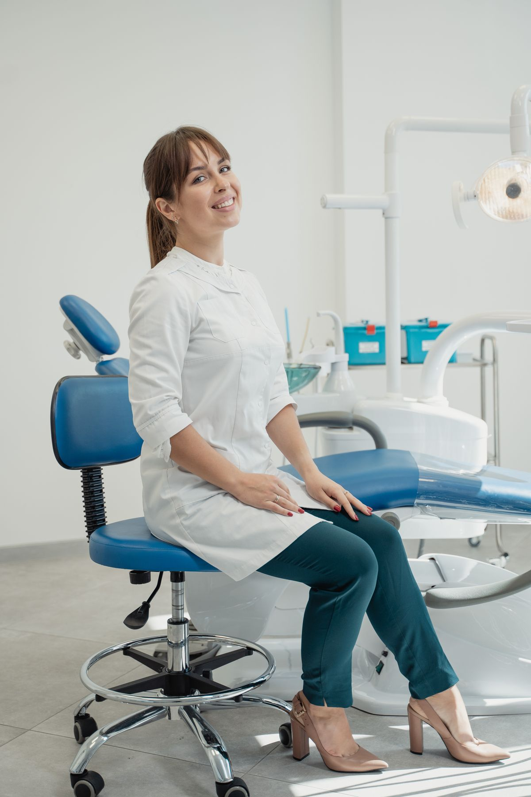
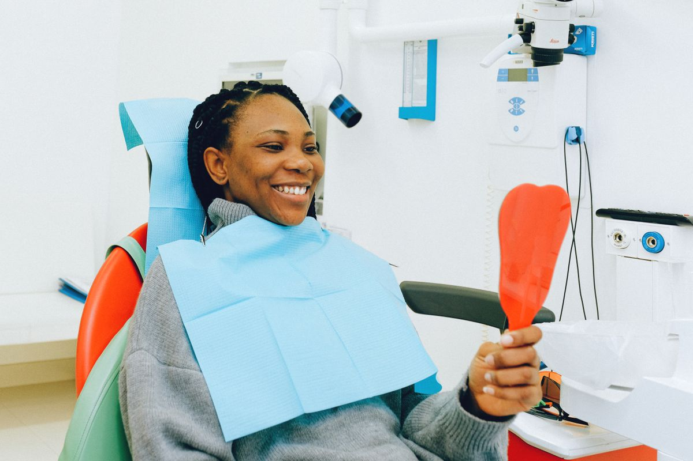
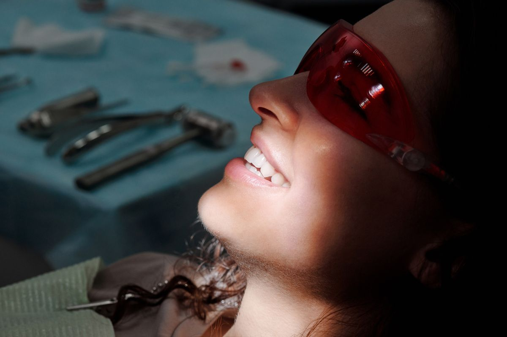
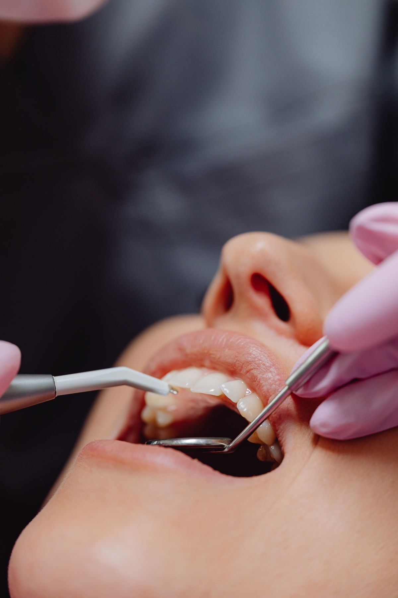
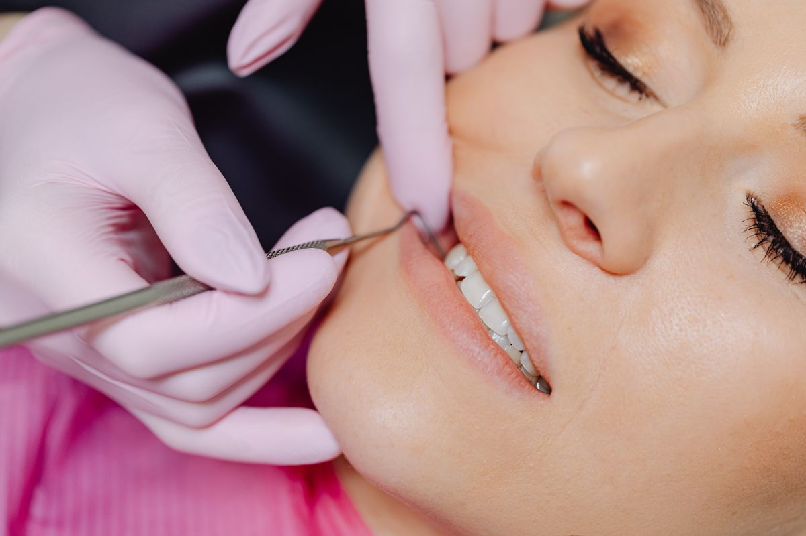
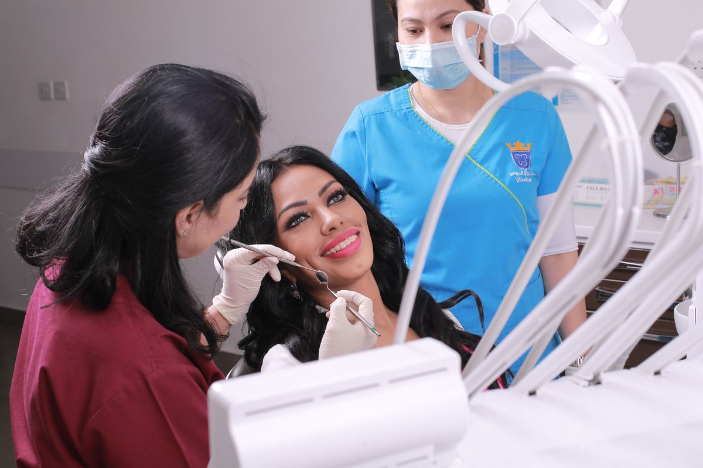
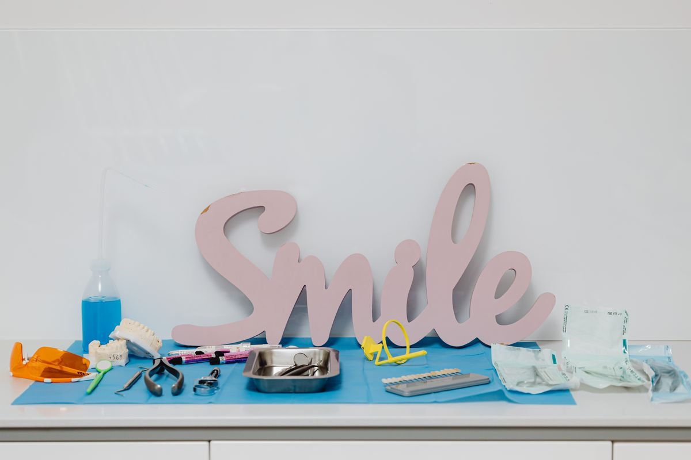
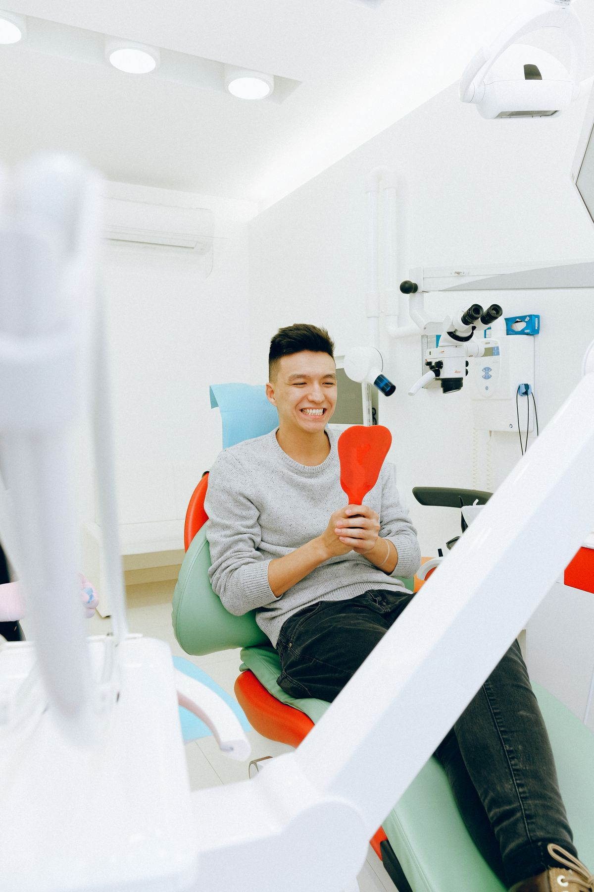
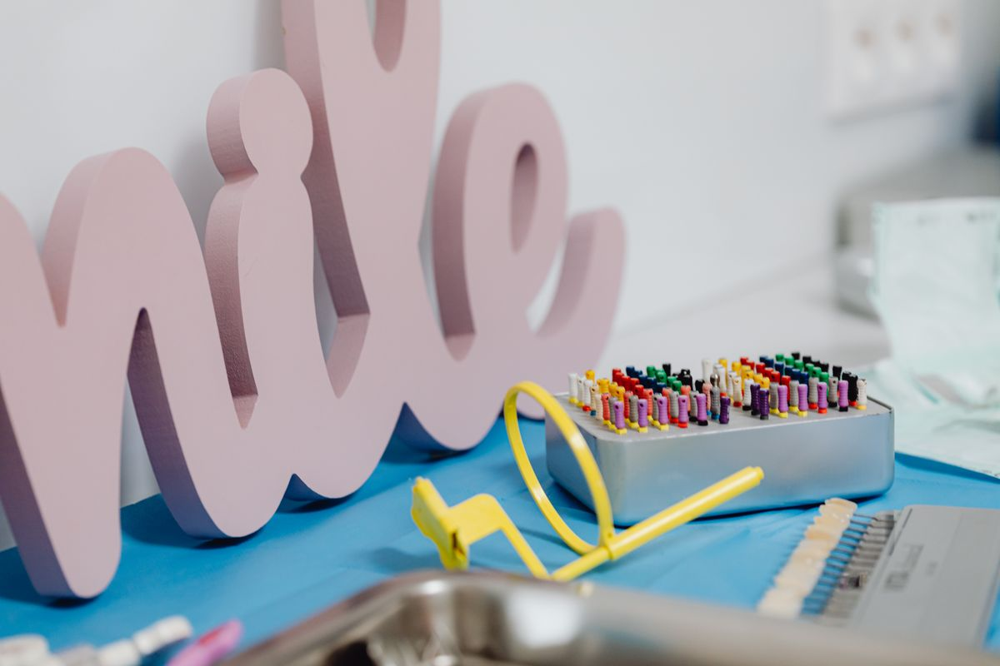

جراحی دندان
کشیدن دندانهای پیچیده و جراحیهای دهان، با برنامهریزی دقیق و مراقبتهای بعد از عملِ روشن.
دکتر نادیا رباطی، جراح و دندانپزشک؛ از جراحی و ترمیم تا زیبایی لبخند. در تجریش تهران و دماوند، با برنامهای روشن: اول معاینه و توضیح شفاف، بعد درمان.

وقتی جراح و دندانپزشکت یکی است، از معاینه تا جراحی و ترمیم، همهچیز با یک نگاه و یک برنامه پیش میرود.

کشیدن دندانهای پیچیده و جراحیهای دهان، با برنامهریزی دقیق و مراقبتهای بعد از عملِ روشن.

بازسازی دندانهای شکسته و پوسیده با کامپوزیت هماهنگ با رنگ و فرم دندانهای کناری؛ طوری که جای ترمیم پیدا نباشد.

اصلاح فرم و رنگ دندانها و پولیش نهایی، برای لبخندی طبیعی و یکدست که به چهرهات بیاید.

بررسی کامل دهان و دندان و توضیح شفاف وضعیت و گزینههای درمان؛ قبل از اینکه هیچ تصمیمی بگیری.

درمان پوسیدگی و مراقبتهای دورهای؛ برای اینکه کار به درد، عفونت و درمانهای سنگین نرسد.

دندان شکسته یا لبپَرشده را عقب نینداز؛ هرچه زودتر دیده شود، شانس حفظ خود دندان بیشتر است.

در مطب دکتر نادیا رباطی، نگاه جراحی و درمانی کنار هم است؛ یعنی از همان معاینه اول، مسیر درمان کامل دیده میشود و لازم نیست برای هر مرحله پیش پزشک تازهای بروی.
تشخیص، ترمیم و جراحی دست یک نفر است؛ برنامه درمانت یکدست و بدون رفتوآمد اضافه.
دندان شکسته طوری بازسازی میشود که با رنگ و فرم بقیه دندانها یکی باشد، نه یک تکه جدا.
تهران (تجریش) یکشنبه و سهشنبه، دماوند شنبهها؛ هرکدام برایت راحتتر است.
برنامه هفتگی مطب از قبل معلوم است؛ نوبتت را با یک پیام واتساپ هماهنگ میکنی.
از نزدیک با فضای درمان و جزئیات کار در مطب آشنا شو.




با یک پیام در واتساپ، روز و ساعتت را برای مطب تجریش یا دماوند هماهنگ میکنی.
اول وضعیت دندانها کامل بررسی میشود و دغدغه خودت شنیده میشود؛ بدون عجله و بدون تصمیم از پیش گرفته.
گزینههای درمان با مزایا و محدودیتهای هرکدام برایت توضیح داده میشود تا انتخاب با خودت باشد.
درمان با دقت اجرا میشود و مراقبتهای بعد از آن هم قدمبهقدم برایت روشن است.
سادهترین راه، پیام در واتساپ به شماره ۰۹۱۹۰۹۹۱۰۴۷ است؛ روز و ساعت مناسب خودت را هماهنگ میکنی و برای مطب تجریش یا دماوند نوبت میگیری.
مطب تجریش تهران یکشنبهها و سهشنبهها از ساعت ۱۱ تا ۲۰ و مطب دماوند شنبهها از ساعت ۱۳ تا ۲۰ فعال است.
اگر تکه شکسته را پیدا کردی نگهش دار، دهان را آرام با آب ولرم بشور و هرچه زودتر با مطب تماس بگیر. رسیدگی زودهنگام، شانس حفظ و ترمیم هماهنگ خود دندان را بیشتر میکند.
تهران، تجریش، ابتدای خیابان شریعتی، کوچه تدین، پلاک ۹، واحد ۱۳. برای مسیریابی یا هر سؤالی، در واتساپ پیام بده.
همین امروز برای هماهنگی نوبت در واتساپ پیام بده.